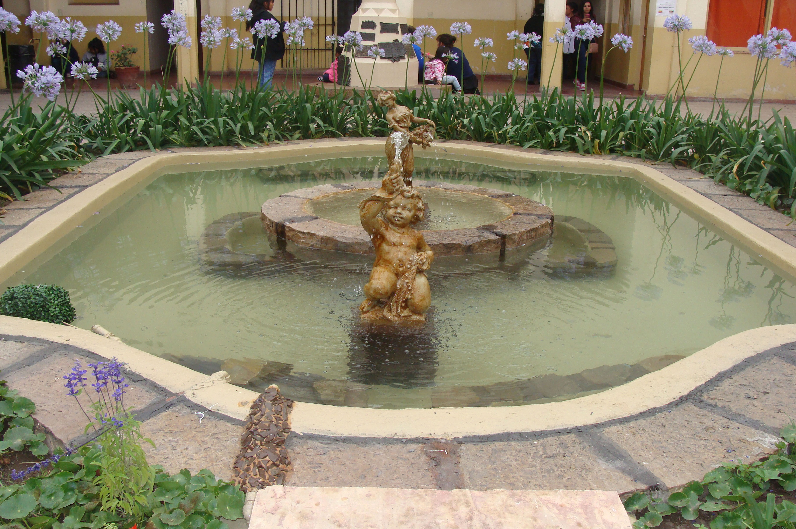

OFERTA EDUCATIVA
CURSOS DE CAPACITACIÓN LABORAL
DURACIÓN: 1 AÑO

![Thumbnail [100%x225]](imagenes/bord art.jpg)
![Thumbnail [100%x225]](imagenes/01Bordart2.jpg)
![Thumbnail [100%x225]](imagenes/cocina2.jpg)
![Thumbnail [100%x225]](imagenes/03Cocina2.jpg)

![Thumbnail [100%x225]](imagenes/corte tt3.jpg)
![Thumbnail [100%x225]](imagenes/cort tn33.jpg)
![Thumbnail [100%x225]](imagenes/07Corte2.jpg)

![Thumbnail [100%x225]](imagenes/13Encaje2.jpg)

![Thumbnail [100%x225]](imagenes/09CorteSuperior2.jpg)
![Thumbnail [100%x225]](imagenes/tej ind tn3.jpg)
![Thumbnail [100%x225]](imagenes/11Diseño2.jpg)

![Thumbnail [100%x225]](imagenes/17 Gas2.jpg)
![Thumbnail [100%x225]](imagenes/gastro reg andina2.jpg)
![Thumbnail [100%x225]](imagenes/15Regional2.jpg)

![Thumbnail [100%x225]](imagenes/repost tt2.jpg)

![Thumbnail [100%x225]](imagenes/19Panaderia2.jpg)

![Thumbnail [100%x225]](imagenes/tej a mano1-2.jpg)
![Thumbnail [100%x225]](imagenes/23Tejido2.jpg)

![Thumbnail [100%x225]](imagenes/traje2.jpg)
CURSOS DE FORMACIÓN PROFESIONAL
DURACIÓN: 3 AÑOS


TE ESPERAMOS!!!